Accueil › Réseau › Routage › Authentification des Protocoles de Routage
Authentification MD5 sur EIGRP
Objectif
Ce TP porte sur la mise en place de l'authentification MD5 pour EIGRP. Sans authentification, n'importe quel routeur peut rejoindre un domaine EIGRP et injecter de fausses routes — une attaque classique de type route injection. L'objectif est de configurer deux routeurs Cisco (Dakar et Thies) pour qu'ils authentifient mutuellement leurs messages EIGRP via un trousseau de clés partagé.
📖 Pourquoi authentifier les protocoles de routage ?
- Menace sans auth : un attaquant peut connecter un routeur malveillant, établir une adjacence EIGRP et injecter de fausses routes → détournement de trafic
- MD5 : chaque paquet EIGRP est signé avec un hash MD5 de la clé secrète — les routeurs sans la bonne clé ne peuvent pas former d'adjacence
- Key-chain : mécanisme Cisco permettant de regrouper plusieurs clés avec des plages de validité — facilite la rotation des clés
- Symétrie obligatoire : les deux routeurs doivent avoir exactement le même key-chain (même nom, même clé, même secret) — une configuration asymétrique coupe l'adjacence
Topologie du réseau
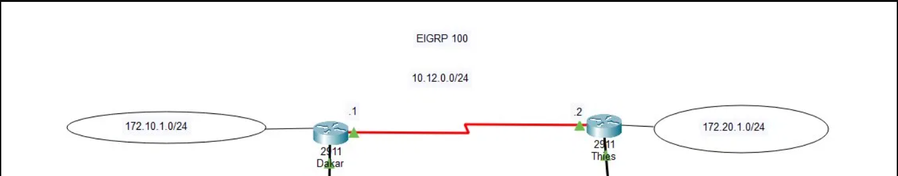
Étapes de configuration
1Configuration des interfaces
On commence par configurer les interfaces Serial entre Dakar et Thies pour établir la connectivité de base :
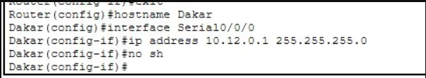
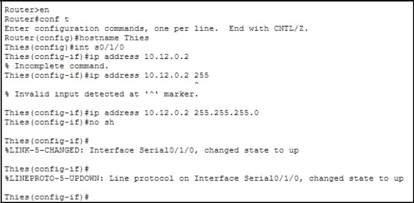
2Configuration EIGRP (sans authentification)
On commence par établir EIGRP normalement avant d'ajouter l'authentification :
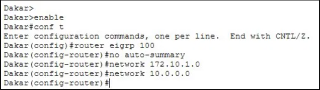
no auto-summary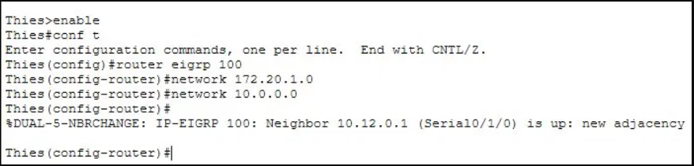
%DUAL-5-NBRCHANGE: Neighbor 10.12.0.1 is up3Création du trousseau de clés (Key-Chain) sur Dakar
On crée un key-chain nommé MYIPROSI avec une clé d'identifiant 1 et le secret iprosi2018 :
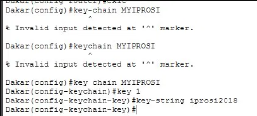
key-chain vs key chain) illustrent la syntaxe exacte requise4Activation de l'authentification MD5 sur Dakar
On associe le key-chain à l'interface série de Dakar pour EIGRP AS 100 :
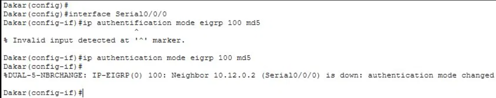
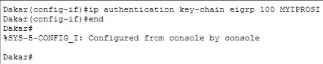
5Configuration complète de l'authentification sur Thies
On reproduit exactement la même configuration sur Thies :
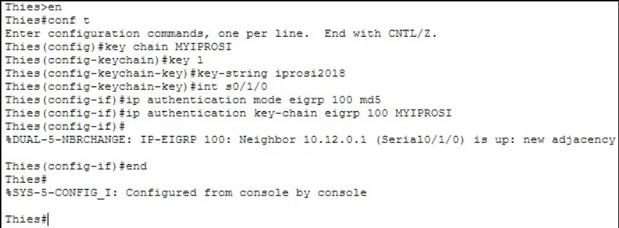
iprosi2018 sera rejeté.
6Tests de connectivité et vérification
Ajout de PC0 (172.10.1.10) côté Dakar et PC1 (172.20.1.10) côté Thies pour valider le routage end-to-end :
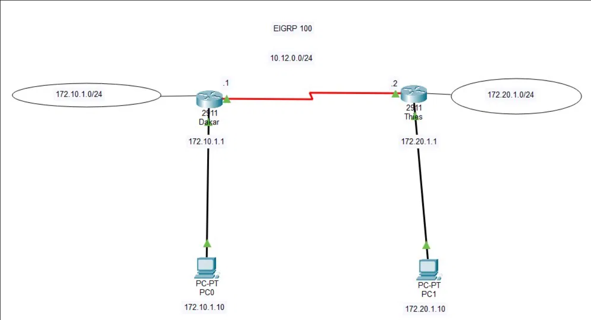
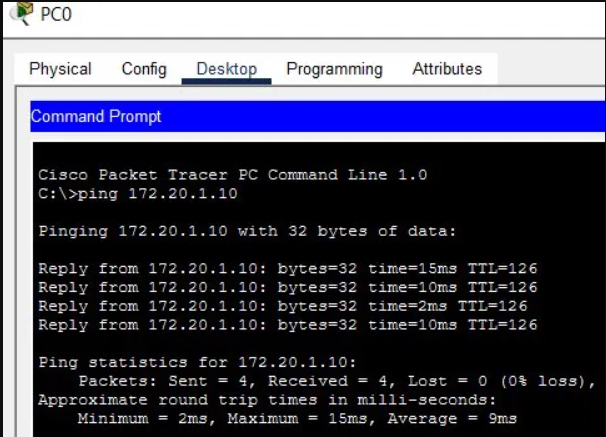
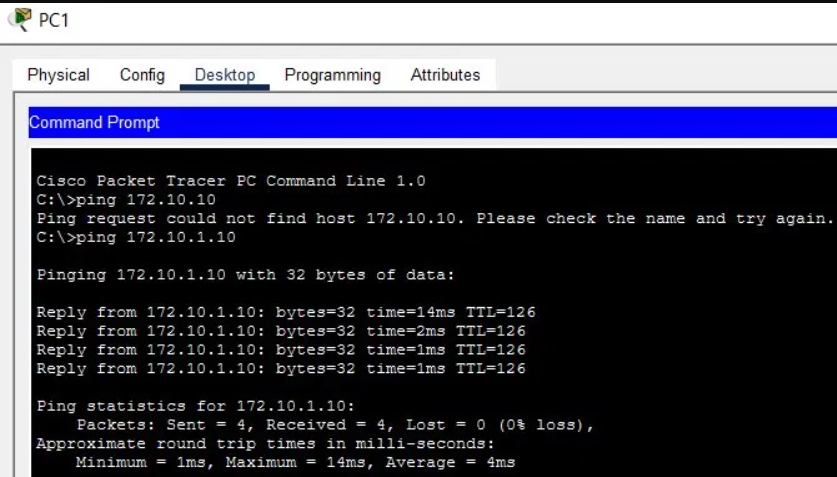
7Analyse – Debug EIGRP packets
La commande debug eigrp packets permet d'observer en temps réel les échanges EIGRP et de confirmer que l'authentification MD5 est active :
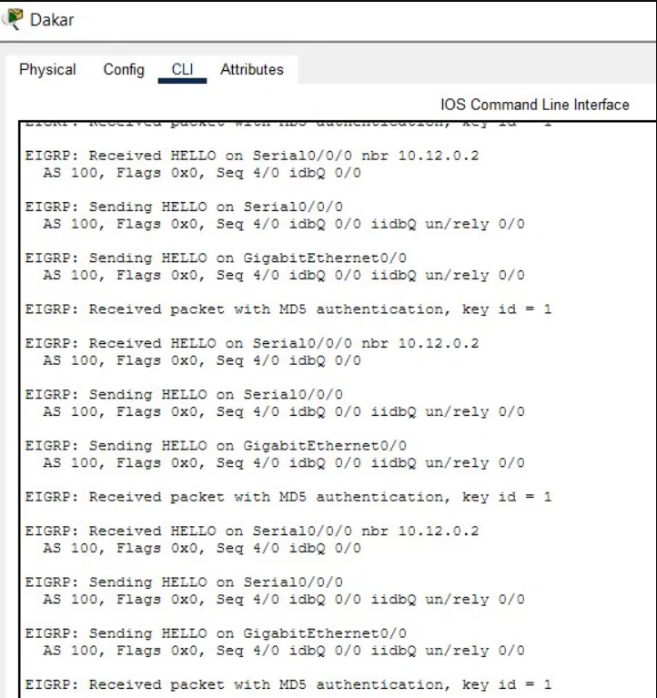
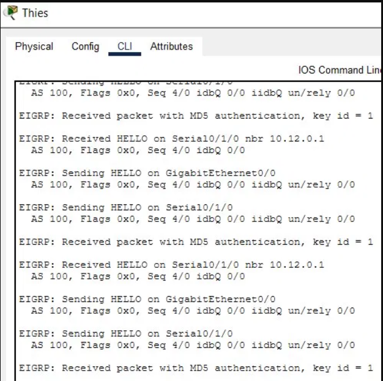
- Received packet with MD5 authentication, key id = 1 → les paquets de Thies sont bien signés et validés
- Received HELLO on Serial0/0/0 nbr 10.12.0.2 → Dakar reçoit les HELLO de Thies
- Sending HELLO on Serial0/0/0 → Dakar envoie ses propres HELLO signés
✅ Ce que j'ai appris
- Comprendre la menace de route injection et pourquoi l'authentification des protocoles de routage est essentielle en production
- Créer un key-chain sur Cisco IOS :
key chain [nom]→key [id]→key-string [secret] - Activer l'authentification MD5 sur une interface EIGRP :
ip authentication mode eigrp [AS] md5+ip authentication key-chain eigrp [AS] [nom] - Comprendre la configuration asymétrique : activer l'auth sur un seul côté coupe l'adjacence — les deux routeurs doivent être configurés simultanément en prod
- Utiliser
debug eigrp packetspour vérifier que l'authentification MD5 est active sur les échanges HELLO - Distinguer la syntaxe :
key chain(avec espace) est correct —key-chaingénère une erreur sur certains IOS